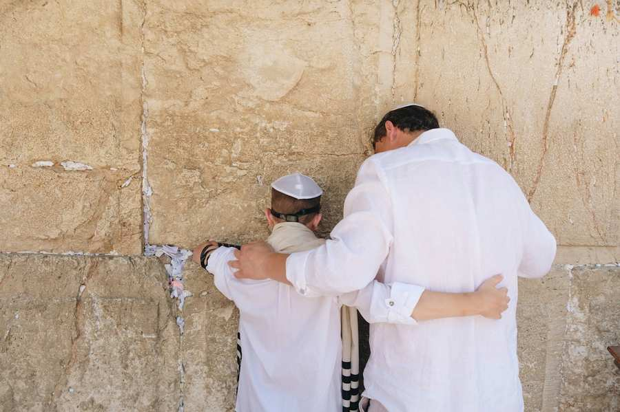

Stationen des Lebens
Brit Milah - Namensgebung
Wird ein jüdischer Junge geboren, so wird er bald nach seiner Geburt in den Bund mit G’tt und mit dem jüdischen Volk aufgenommen, anhand der „Brit Milah“, dem Bund der Beschneidung. Diese wurde zum ersten Zeichen des Bundes zwischen G’tt und unserem Vorvater Awraham und dient seither als Zeichen der Zugehörigkeit zum jüdischen Volk. Die Beschneidung wird idealerweise am achten Tag von der Geburt an vollzogen. Konnte sie dann nicht durchgeführt werden, kann und soll dies so schnell wie möglich nachgeholt werden. Die Beschneidung ist ein freudiges Ereignis, mit dem der Neugeborene feierlich von Familie und Freunden offiziell empfangen wird. Dabei wird ihm auch sein Name gegeben. Auch bei einem Mädchen findet unmittelbar nach der Geburt die Namensgebung statt, bei der Torah-Vorlesung am Shabbat.
Pidjon haBen
Ist der Erstgeborene einer jüdischen Mutter ein Junge, so soll er am dreißigsten Tag nach seiner Geburt durch seinen Vater von einem Kohen, einem jüdischen Priester, „ausgelöst“ werden. Die Auslösung des Erstgeborenen heißt „Pidjon haBen“. Ursprünglich waren die jüdischen Erstgeborenen zum Dienst im Tempel bestimmt und von Geburt an geheiligt. Da sie aber beim Goldenen Kalb sündigten, haben die Angehörigen des Stammes Levi, welche unbescholten blieben, und die aus ihnen hervorgehenden Priester diese Rolle übernommen. Seither werden die Erstgeborenen, sofern die Eltern nicht selber dem Stamm Levi entstammen, beim Kohen mit fünf Silbermünzen (oder anderen, wenn möglich silbernen Gegenständen im selben Gegenwert), welche insgesamt mindestens 100 Gramm wiegen, ausgelöst.
Bar Mizwah oder Bat Mizwah
Mit zwölf Jahren feiert ein Mädchen seine Bat Mizwah, ein Junge seine Bar Mizwah mit dreizehn. Damit werden sie von Kindern und Unmündigen zu vollwertigen Mitgliedern der jüdischen Gemeinschaft, im religiösen und halachischen (religionsgesetzlichen) Sinne. Von diesem Zeitpunkt an tragen sie nun eigene Verantwortung für ihre Taten und kriegen das Recht, verschiedene religiöse Handlungen für die Gemeinschaft ausführen zu können. Dies drückt ein Junge bei seiner Bar Mizwah aus, indem er zum ersten Mal zur Torah aufgerufen wird und aus ihr vorliest, wozu nach der Halachah nur erwachsene jüdische Männer befugt sind. Bei den Feierlichkeiten halten der Bar-Mizwah-Junge, bzw. das Bat-Mizwah-Mädchen, eine Rede und bezeugen damit, dass sie ernstzunehmende Persönlichkeiten sind und die Aufmerksamkeit der Erwachsenen zwecks geistiger Bereicherung verdienen.
Für die Vorbereitung von Jugendlichen können Sie sich an den Bar/Bat Mitzwah Club sowie an den Herrn Oberkantor Shmuel Barzilai wenden unter
Chuppah - Heirat
Hat ein jüdischer Mensch seinen jüdischen Partner fürs Leben gefunden und möchte mit ihm den Bund der Ehe eingehen, so wird diese Zeremonie unter der Chuppah abgehalten. Chuppah heißt der Baldachin, unter dem die Trauung vorgenommen wird. Sie symbolisiert das Haus, in das das frischverheiratete Paar nun zusammen einzieht und seine eigene Familie darin gründet. Unter der Chuppah finden auch die Kidduschin statt, wörtlich die „Heiligung“, womit gemeint ist, dass der Chatan (Bräutigam) der Kalah (Braut) einen Ring schenkt und sie ihm somit angetraut ist. Das Eheleben ist im Judentum etwas Heiliges, weswegen die Trauung die Bezeichnung „Heiligung“ verdient.
Get - Scheidung
Eine Scheidung ist zwar nicht wünschenswert, aber manchmal notwendig. Wenn eine Scheidung ansteht, soll diese vor dem Bet Din - einem Rabbinatsgericht - vollzogen werden. Wesentlicher Bestandteil der Scheidungszeremonie ist es, einen Get – Scheidebrief – aufzusetzen, welcher dann vom Mann der Frau in Anwesenheit des Bet Din und vor Zeugen überreicht wird. Dies kann auch anhand von Boten über Distanz geschehen. Die Durchführung einer jüdischen Scheidung ist von großer Wichtigkeit, damit die künftige Verbindung zu anderen Partnern religiös erlaubt, sowie künftigen Kindern ein einwandfreier Status gewährleistet ist.
Lewajah - Beerdigung
„Lewajah“ (Jiddisch: „Lewaje“) ist eine
Beerdigung. Wörtlich heißt der Ausdruck jedoch „Begleitung“, denn es ist ein
Gebot der Güte und Ehrerweisung gegenüber einer verstorbenen Person, auf ihrem
letzten Wege von Verwandten, Bekannten, und auch von anderen begleitet und
verabschiedet zu werden. Die Beerdigung ist für den irdischen Lebensweg einer
jüdischen Person die (vorerst) letzte Station und bringt auch hier ihre
Zugehörigkeit zum jüdischen Volk zum Ausdruck, indem sie nach jüdischer
Tradition und Ritus auf dem jüdischen Friedhof zwischen Juden und Jüdinnen begraben wird und
ihre ewige Grabesruhe findet. Für Hinterbliebene im Todesfall finden Sie unter folgender Adresse mehr Informationen: https://www.ikg-wien.at/rabbinat-info-hinterbliebene
Simches - Freudenfeiern
Die fröhlichen Lebensstationen im jüdischen Leben werden „Simches“ – „Freudenfeiern“ genannt. Da wir uns diese besonders wünschen, ist es zu einem geläufigen Wunsch unter Jüdinnen und Juden geworden, sich „auf Simches!“ zu wünschen – „mögen wir uns an freudigen Anlässen treffen!“
Das Rabbinat steht für alle Lebensstationen zur Verfügung und darf gerne kontaktiert werden. Im folgenden Formular können Sie gerne Kontakt aufnehmen. Auf Simches!